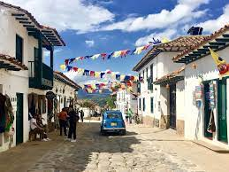
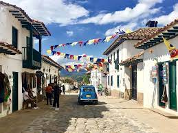

villa de leyva, Boyacá

Un lugar mágico y lleno de historia cultural y geologica, sumado a esto, una gran afluencia turistica tanto de nacionales como extranjeros
LUIS FELIPE VELANDIA LLANES
Un lugar mágico y lleno de historia cultural y geologica, sumado a esto, una gran afluencia turistica tanto de nacionales como extranjeros
Villa de Leyva, un municipio boyacense que conserva en su arquitectura las muestras más auténticas del pasado colonial. Este pueblo es, sin duda, uno de los más bellos de Colombia, y es muy famoso por su importancia histórica y por su magnífica plaza, que le valieron ser reconocido como Monumento Nacional en 1954.
 

Ubicada a unos 40 kilómetros al oeste de Tunja, La Villa de Leyva o Leiva, se caracteriza por su arquitectura de estilo colonial y por sus paisajes rurales. Constituye uno de los pueblos mas hermosos de Colombia. Sobresale su enorme plaza principal, empedrada (14.000 m2) y flanqueada por viejos edificios coloniales con sus soportales, portalones y balcones. A las edificaciones coloniales que se conservan se han añadido muchas viviendas nuevas, que conservan la tipología tradicional: muros encalados blancos y puertas y ventanas de madera pintadas de verde.
1.caminar a la laguna de iguaque donde se puede disfrutar de un plan de eco-turismo donde se hace representativo los paisajes maravillosos de la region
pozos azules en donde se observan los mejores contrastes de la region entre el desierto y la naturaleza, al estar ubicado en propiedad privada por razones de mantenimiento se deben cancelar 12 o 15 mil pesos por persona para su ingreso.(no es permitido ingresar a los pozos)
3.visitar la casa terracota donde se puede observar una maravilla arquitectonica de la region la casa terracota construida en puro barro.

4. visitar el mirador de el santo, este es un sitio muy preferido o apetecido para las personas aficionadas a las vistas abiertas y amantes de los paisajes, a 1 hora de la plaza mayor de villa de leyva.
5. realizar una visita guiada por la plaza mayor y los alrededores y probar obviamente la cerveza tradicional de chocolate a pocos metro de la plaza mayor. ademas de estas actividades en la plaza mayor de manera anual se celebra el festival de cometas y diversas actividades de observacion y astronomia por la faborable ubicacion y espacio aereo de la plaza.